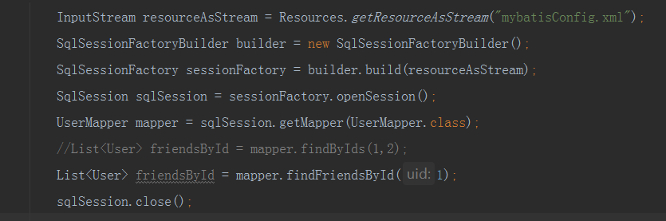
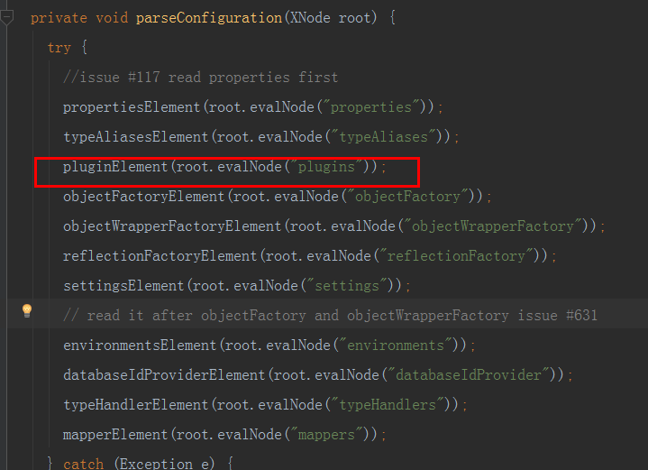
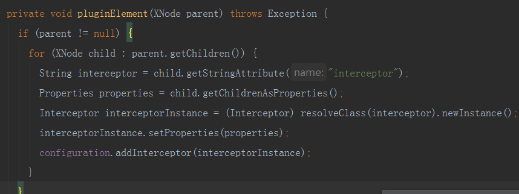
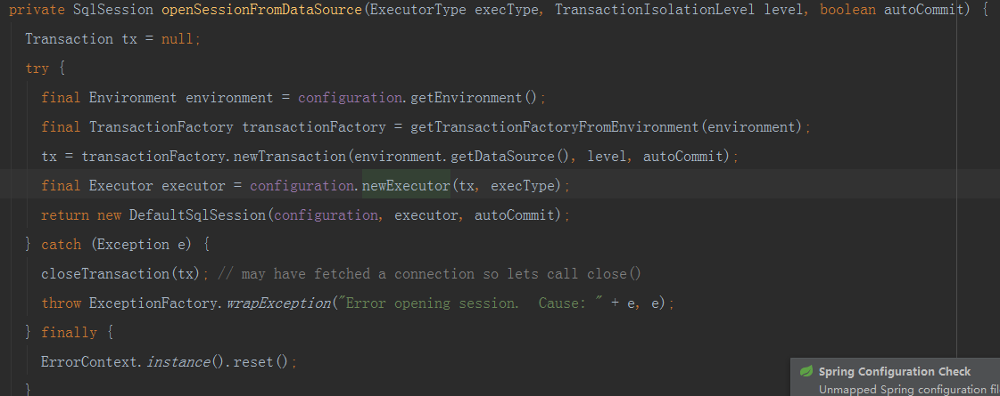
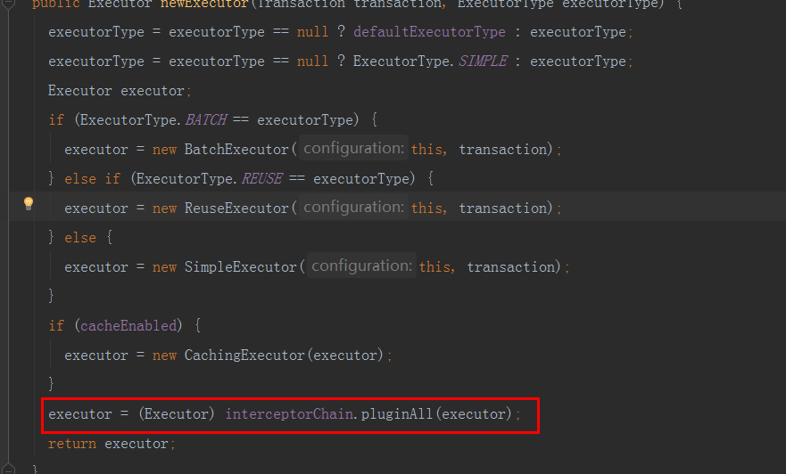
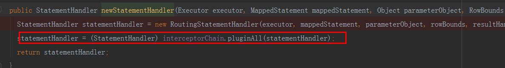
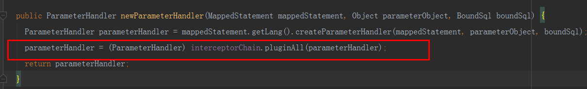
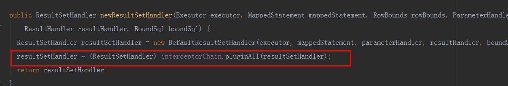

关于mybatis的插件，我想大家也都用过，就比如最常用的逆向工程，根据表结构生成model，dao，xml文件，还有分页插件，那这些插件的工作原理是怎么样的呢，就比如分页插件，它为什么能改变我们在xml文件中写的sql语句，本文将带大家一起来了解mybatis的插件机制。（由于本人也是在不断学习，文中难免有错误或不足之处，还望指正，本文基于mybatis3.3.0版本），下面将围绕这几个方面
1、插件入口，即怎么把插件注入到mybatis代码里面
2、插件能拦截哪些类或哪些方法
3、举例简易分表插件原理
在先了解前，我们来一段自定义mybatis插件的代码
1 import org.apache.ibatis.executor.statement.StatementHandler;
2 import org.apache.ibatis.plugin.*;
3
4 import java.sql.Connection;
5 import java.util.Properties;
6
7 @Intercepts(
8 value = {
9 @Signature(
10 type = StatementHandler.class,
11 method = "prepare",
12 args = {Connection.class} // 不同版本的prepare方法参数不一样，高版本的还有一个Integer参数
13 )
14 }
15 )
16 public class PluginDemo implements Interceptor {
17 @Override
18 public Object intercept(Invocation invocation) throws Throwable {
19 return invocation.proceed();
20 }
21
22 @Override
23 public Object plugin(Object target) {
24 return Plugin.wrap(target,this);
25 }
26
27 @Override
28 public void setProperties(Properties properties) {
29
30 }
要自定义mybatis插件，必须得实现Interceptor接口，这个接口有三个抽象方法
1、intercept，这个方法是mybatis的核心方法，要实现自定义逻辑，基本都是改造这个方法，其中invocation参数可以通过反射要获取原始方法和对应参数信息
2、plugin，它的作用是用来生成一个拦截对方，也就是代理对象，使得被代理的对象一定会经过intercept方法，通常都会使用mybatis提供的工具类Plugin来获取代理对象，如果有自己独特需求，可以自定义
3、setProperties，这个方法就是用来设置插件的一些属性
其中@intercepts注解就是用来标明拦截哪些类，哪些方法。
当我们脱离spring容器来使用mybatis的时候，我们通常是这样写代码的

而在mybatisConfig.xml文件中，我们有配置数据库连接信息，插件，别名，mapper文件映射地址等信息，(温馨提示，这些配置有一定顺序，如果不按照顺序配置，则mybatis解析时会抛出异常，详细配置信息可以参考mbatis的dtd文件配置）既然在配置文件中配置了，那肯定也会被解析掉，如下图，在XmlConfigBuild中进行解析

解析后，插件信息会被存储到configuation中InterceptorChain集合里面，这个configuation在mybatis运行周期是一个单例的，它负责存储所有的配置信息

最终，mybatis的插件信息完整的注入到了configuation里面。
在正常开发流程中，我们基本都是通过先获取sqlSession，如果不采用自定义配置，在默认的sqlsession实现就是defaultSqlSession，在该类的一个方法里就隐含了融合插件，

其中会获取到executor，这个类是通过configuation获取的，

最终融合插件的方法就是图中红框的代码。它会为原始的executor类生成代理类。从而你在执行executor类的一些方法时，比如query,update方法，会先生成对应的代理对象，myabtis采用的是jdk的动态代理，代理后，你执行executor类的query，update方法时会自动转接到你自定义的插件intercept方法里面，也可以理解为覆盖原来的方法。
通过这，我们大概也可以猜测的出，mybatis插件要拦截的类，很大原因在configuation类中有生成，也不带大家绕弯子了，来看截图
拦截statementHandler接口的实现类，它通过routingStatementHandler来实现路由，最终定向到prepareStatementHandler类

拦截parameterHandler。这个接口是用来封装参数用的，也就是最终将参数设置到sql里面

拦截ResultSetHandler接口，它主要用于处理sql运行返回的结果

总结，mybatis可以拦截的类分四大类
一、executor，executor类可以说是执行sql的全过程，如组装参数，sql改造，结果处理，比较广泛，但实际用的不多
二、StatementHandler，这个是执行sql的过程，可以获取到待执行的sql，可用来改造sql，如分页，分表，最常拦截的类
三、paremeterHandler，这个用来拦截sql的参数，可以自定义参数组装规则
四、resultHandler，这个用来处理结果
1 import org.apache.ibatis.executor.statement.StatementHandler;
2 import org.apache.ibatis.mapping.BoundSql;
3 import org.apache.ibatis.plugin.*;
4 import org.apache.ibatis.reflection.MetaObject;
5 import org.apache.ibatis.reflection.SystemMetaObject;
6
7 import java.sql.Connection;
8 import java.util.Properties;
9
10 @Intercepts(
11 value = {
12 @Signature(
13 type = StatementHandler.class,
14 method = "prepare",
15 args = {Connection.class}
16 )
17 }
18 )
19 public class PluginDemo implements Interceptor {
20 @Override
21 public Object intercept(Invocation invocation) throws Throwable {
22
23 /**
24 * 获取被拦截的目前类，在这里是拦截了statementHandler，所有目前类也就是它
25 * 通过这个类我们可以拿到待执行的sql语句，通常使用mataObject工具类来获取
26 * 关于这个工具类，大家可自行了解，个人认为这个工具类很强大
27 */
28 StatementHandler statementHandler = (StatementHandler) invocation.getTarget();
29 MetaObject metaObject = SystemMetaObject.forObject(statementHandler);
30 /**
31 * 先解释下为什么写成delegate.boundSql就可以拿到boundSql类
32 * 从前面也可以得知，statementHandler的默认实现是routingStatementHandler。
33 * 这个类有一个属性statementHandler，属性名就叫delegate，而这个属性的默认实现又是preparedStatementHandler
34 * 后面这个类又有属性boundSql，所以，最终形成的写法就是delegate.boundSql。
35 * 所以这也体现了MetaObject工具类的强大，可以通过实例传参，就可以根据属性名获取对应属性值
36 */
37 BoundSql boundSql = (BoundSql) metaObject.getValue("delegate.boundSql");
38
39 // 待执行的sql，在这里也就是预编译后的sql，即参数位都是?号
40 String sql = boundSql.getSql();
41 /**
42 * 既然拿到了预编译后的sql，那就可以按照你自己的想法为所欲为，如分页，按年分表等等
43 * 分表的话，个人推荐druid的sql解析器，我认为还是不错的，大家可以自行了解
44 * 最后改造完sql，别忘了把它设置回去
45 * metaObject.setValue("delegate.boundSql.sql",sql);
46 * invocation.proceed，即原始方法的执行
47 * 注意点就是，因为mybatis插件采用的是代理模式，所以如果存在多个插件，会形成多个代理
48 * 你如果要拿到最原始的对象，还得进一步进行分解
49 * 如：while(metaObject.getValue(""h) != null){
50 * Object obj = metaObject.getValue("h");
51 * ....
52 * }
53 */
54 return invocation.proceed();
55 }
56
57 @Override
58 public Object plugin(Object target) {
59 return Plugin.wrap(target,this);
60 }
61
62 @Override
63 public void setProperties(Properties properties) {
64
65 }
66 }
-----------------------------------------------------------------------------------------------------------------------------分界线-------------------------------------------------------------------------------------
以上就是全部内容